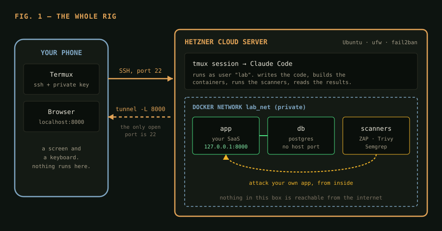
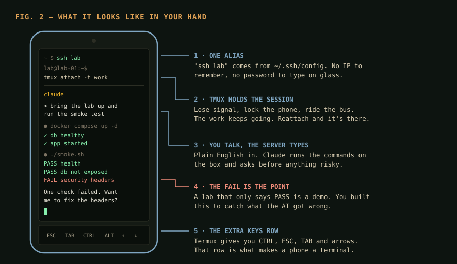

Savvy Security LLC · Field Guide
The Fifty-Dollar Datacenter
A prepaid Moto G Play, a rented Hetzner server, and Claude over SSH. Here is how to stand up a real test lab for software you built with AI, from a phone, for about the price of a tank of gas.
The short version
You do not need a laptop to run a software lab anymore. You need a screen, a keyboard, and an SSH key. A $49.88 prepaid phone gives you all three. The computing happens on a server you rent by the hour. The typing happens in plain English, to an AI that lives on that server.
This article is a nod to Chapter 5, “The Machine You Own,” of my book A Hacker’s Guide to Survive. The chapter tells the story of running a research company on a used $80 Chromebook. This is the same idea pushed one step further down the price ladder, with every command you need to copy it.
The pitch you hear about AI is that anybody can build software now. That part is mostly true. The part nobody finishes is the second half of the sentence: anybody can build software now, and most of them have nowhere safe to test it.
So people test on the laptop they bank with. Or they push straight to the live site and find out in public. Or they never test at all, because a “real lab” sounds like a rack of servers and a budget.
It isn’t. A real lab is a machine that is not your daily machine, a network nothing else lives on, and a way to break your own work before a stranger does. You can rent all of that for pennies an hour and drive it from the cheapest phone at Walmart.
The money wall is gone. What’s left is two things: a few base resources, and knowing what to do with them.
What actually changed
In 2010 a group at Berkeley wrote the paper that named this shift. They listed what was new about cloud computing: computing that looks unlimited on demand, no up-front commitment, and the ability to pay for it in short stretches and let it go when you’re done (Armbrust et al., 2010). Before that, a test environment meant buying hardware and guessing how much you’d need. A wrong guess cost real money either way.
That change gave small shops the machine. It did not give them the hands. You still needed somebody who could configure a firewall, write a container file, and read a scanner report.
That is the part AI changed. I don’t write code by hand. I describe what I want, read what comes back, and decide. An agent like Claude Code can sit on the server, run the commands, and explain each one. The skill that used to take years to rent now ships with the tool.
I want to be careful with the big claim. A fifty-dollar phone does not make you a million dollars. What it does is remove the capital from the list of reasons you can’t start. The kind of project that once needed a funded team and a server room can now be attempted by one person with a prepaid phone. Whether it succeeds is on you. That was always true.
The bill
Here is the whole rig, priced. I checked these the week this was written. Prices move, so check them yourself before you spend.
| Item | Cost | Notes |
|---|---|---|
| Phone | $49.88 once | Straight Talk Moto G Play (2026) at Walmart. 4 GB RAM, 6.7-inch screen, 5,200 mAh battery. Locked to Straight Talk. Any Android 7 or newer phone works. |
| Server | about $7 / month | Hetzner CX23: 2 vCPU, 4 GB RAM, 40 GB disk. €5.49 plus €0.50 for an IPv4 address. Billed by the hour, capped at the monthly price. |
| The AI | $20 / month | Claude Pro. It is the cheapest plan that includes Claude Code. The free plan does not. |
| Software | $0 | Termux, OpenSSH, Ubuntu, Docker, Postgres, OWASP ZAP, Trivy, Semgrep. All free and open source. |
| First month | about $77 | After that, about $27 a month. Delete the server when you’re not using it and the server line drops to cents. |
Two honest warnings about Hetzner before you start.
It got more expensive and harder to get. Hetzner raised cloud prices twice in 2026, in April and June. Since late June it has also limited new servers for new customers because it is short on hardware. The cheap CX plans come and go during the day. If the CX23 is greyed out, try another location, try again in a few hours, or take the next size up. If Hetzner will not sell you one at all, every step below works the same on any provider that gives you an Ubuntu server and an IP address.
A cloud server is not bare metal. It is a slice of a real machine that you share with other customers. Hetzner also rents whole dedicated machines, and that is where you go when you outgrow this. For testing a web app, the slice is plenty.

Step 1 · Turn the phone into a terminal
Install Termux. It is a real Linux command line that runs as a normal Android app. No rooting, no tricks.
Get it from F-Droid or the project’s GitHub releases. Do not use the Google Play copy. The Termux team says plainly that the Play build is a separate, cut-down branch, and they recommend F-Droid or GitHub instead.
Open Termux and type:
# update Termux, then install the SSH client pkg update && pkg upgrade -y pkg install -y openssh # make your key. press Enter for the default file, then set a passphrase. ssh-keygen -t ed25519 -C "phone" # print the PUBLIC half. copy this whole line. cat ~/.ssh/id_ed25519.pub
You will get one long line that starts with ssh-ed25519. That is your public key. It is safe to paste into Hetzner. The file without .pub is the private key. It never leaves the phone.
Why this kind of key: Ed25519 was designed by Bernstein and colleagues to be fast and hard to get wrong, and the keys are short enough to read on a phone screen (Bernstein et al., 2012). It is the modern default for SSH.
One more command, and it matters on a phone:
# stop Android from putting Termux to sleep mid-session
termux-wake-lock
Step 2 · Rent the server
All of this happens in the phone’s browser at console.hetzner.com. You’ll need an account and a payment method.
- Create a project. Call it lab.
- Tap Add Server. Pick the location closest to you that has stock.
- Image: Ubuntu 24.04.
- Type: CX23 (shared, cost-optimized). Take the CX33 with 8 GB if you can spare a few dollars. Claude Code asks for 4 GB at minimum, and the lab wants room too.
- SSH keys: tap Add SSH key and paste the line from Step 1.
- Open Cloud config and paste the file below. Swap in your own public key first.
- Name it lab-01 and create it. Write down the IP address it gives you.
The cloud config is the part most guides skip. It is a short script the server runs once, on first boot. This one locks the machine down before you ever log in.
#cloud-config groups: - docker users: - name: lab groups: [sudo, docker] shell: /bin/bash sudo: "ALL=(ALL) NOPASSWD:ALL" ssh_authorized_keys: - ssh-ed25519 AAAAC3...REPLACE-WITH-YOUR-KEY... phone package_update: true package_upgrade: true packages: - ufw - fail2ban - tmux - git - curl - docker.io - docker-compose-v2 - unattended-upgrades swap: filename: /swapfile size: 2G maxsize: 2G write_files: - path: /etc/ssh/sshd_config.d/10-lab.conf permissions: "0644" content: | PermitRootLogin no PasswordAuthentication no KbdInteractiveAuthentication no AllowUsers lab runcmd: - ufw default deny incoming - ufw default allow outgoing - ufw allow OpenSSH - ufw --force enable - systemctl enable --now docker fail2ban - systemctl restart ssh
code/cloud-init.yaml in the kit. In plain English: make a user called lab, let only that user in, only with your key, never with a password, never as root. Close every port except SSH. Ban addresses that guess wrong too many times. Install Docker. Add swap so a small box survives a heavy scan.
The lab user can run Docker and sudo without a password. That is root in everything but name, and it is the user Claude runs as. I accept that here for one reason: this box is disposable and holds nothing real. No customer data, no production keys, no personal accounts. If that ever stops being true, this setup stops being acceptable.
Step 3 · Connect, and stay connected
Back in Termux. Give the server a nickname so you never type the IP again. Replace the address with yours.
cat >> ~/.ssh/config <<'EOF'
Host lab
HostName 203.0.113.10
User lab
IdentityFile ~/.ssh/id_ed25519
ServerAliveInterval 30
ServerAliveCountMax 4
EOF
ssh lab
The first time, SSH asks if you trust the server. Say yes. Then wait for the first-boot script to finish and check its work:
cloud-init status --wait # should end with: status: done sudo ufw status # should say: Status: active, 22/tcp ALLOW docker --version
Now the single most important habit for working from a phone. Start tmux before you do anything else.
tmux new -s work # first time tmux attach -t work # every time after
A phone drops its connection constantly. You walk out of Wi-Fi range, the screen locks, a call comes in. Without tmux, whatever was running dies with the connection. With tmux, the session lives on the server. You reconnect, reattach, and it is exactly where you left it, still working.

Step 4 · Put Claude on the server
Inside tmux, on the server:
# install Claude Code (the official installer) curl -fsSL https://claude.ai/install.sh | bash # reload your shell so the "claude" command is found, then check it source ~/.bashrc claude --version claude doctor
Then make a home for the lab and start Claude in it:
mkdir -p ~/lab && cd ~/lab claude
The first run asks you to log in. A server has no browser, so Claude prints a link. Long-press it in Termux, open it in the phone’s browser, sign in to your Claude account, and paste the code it gives you back into the terminal. You do that once.
Before you ask it for anything, give it house rules. Claude Code reads a file named CLAUDE.md at the start of every session. This is where you write down what the box is for and what is off limits.
# Lab rules This server is a disposable test lab. Read these before doing anything. ## Hard rules - Only test targets inside the Docker network `lab_net`. Never scan, probe, or send traffic to any host I do not own. - Never publish a container port to 0.0.0.0. Bind to 127.0.0.1 only. - Never change ufw, sshd, or fail2ban settings without asking me first. - Secrets live in `.env`. Never print them, never commit them. - Fake data only. Never real customer data or real secrets. ## How to work - After every change: `docker compose up -d --build`, then `./smoke.sh`. - When a scanner reports a finding: show it to me in plain English, say how bad it is, propose the fix, and wait for a yes. - I am on a phone. Keep output short. Summaries first, detail when I ask.
code/CLAUDE.md, trimmed. That last rule is not a joke. Tell it you’re on a small screen and the whole session gets easier to read.
Step 5 · Build the lab
Pull the kit that goes with this article and copy it into place:
cd ~
git clone --depth 1 https://github.com/malcolm1014/savvy-blog
cp -r savvy-blog/posts/the-fifty-dollar-datacenter/code/. ~/lab/
cd ~/lab
cp env.example .env # then change every value in .env
The heart of it is one file. It describes your app, its database, and a private network for them to live on.
name: lab services: app: build: ./app # your SaaS, with its own Dockerfile env_file: .env ports: - "127.0.0.1:8000:8000" # loopback ONLY. Never "8000:8000". depends_on: db: condition: service_healthy networks: [lab_net] read_only: true tmpfs: [/tmp] cap_drop: [ALL] security_opt: ["no-new-privileges:true"] mem_limit: 512m db: image: postgres:17-alpine env_file: .env volumes: - dbdata:/var/lib/postgresql/data healthcheck: test: ["CMD-SHELL", "pg_isready -U $${POSTGRES_USER} -d $${POSTGRES_DB}"] interval: 5s retries: 10 networks: [lab_net] # no "ports:" at all mem_limit: 512m networks: lab_net: name: lab_net volumes: dbdata:
code/docker-compose.yml, trimmed. The database has no door to the outside at all. The app has one, and it only opens onto the server itself.
Look hard at the line 127.0.0.1:8000:8000. If you write 8000:8000 instead, Docker publishes your app to the whole internet and goes around the ufw firewall to do it. Docker writes its own firewall rules, ahead of ufw’s. Your firewall will say the port is closed. It will be open. Bind to loopback and the problem never starts. This is the kind of thing money can’t buy and a tutorial rarely mentions.
Now bring your code over, or have Claude write it there. Either way, this is where you stop typing commands and start talking:
> Read CLAUDE.md. My app goes in ./app. Write a Dockerfile for it that
runs as a non-root user and listens on port 8000. Then bring the lab
up and run ./smoke.sh. Tell me what failed and why, in plain English.
To see the app, open a second Termux session. Swipe in from the left edge and tap New session. Then open a tunnel:
ssh -N -L 8000:127.0.0.1:8000 lab
Leave that running. Open Chrome on the phone and go to http://localhost:8000. That is your app, running in a datacenter, shown on your phone, through an encrypted pipe. Nobody else on earth can load that page.
Step 6 · Attack your own work
This is the step the whole lab exists for, and it is the one people skip.
AI writes code fast. It does not write safe code by default, and the research on that is not subtle. When NYU researchers had an AI assistant complete 89 security-relevant scenarios, about 40% of the 1,689 programs it wrote were vulnerable (Pearce et al., 2022). When Stanford researchers ran a user study, people with an AI assistant wrote less secure code than people without one, and were more likely to believe their code was secure (Perry et al., 2023).
Read that second finding twice. The tool makes you worse at the thing and more confident about it. A lab is how you take the confidence back out.
Start with the five-second check. Run it after every single change.
$ ./smoke.sh PASS app answers (200) PASS only port 22 is public PASS db not exposed PASS header x-content-type-options FAIL header content-security-policy missing FAIL header x-frame-options missing PASS ufw active
Example output from code/smoke.sh. Two fails on a first run is normal. Hand them to Claude: “Fix the two failing header checks and run it again.”
Then run the real scanners. Three free tools, three different angles:
# 1. Semgrep reads your source for known-bad patterns docker run --rm -v "$PWD/app:/src" semgrep/semgrep \ semgrep scan --config auto --quiet /src # 2. Trivy checks your dependencies for known CVEs and leaked secrets docker run --rm -v "$PWD:/src" aquasec/trivy:latest \ fs --scanners vuln,secret,misconfig --quiet /src # 3. OWASP ZAP probes the running app from inside the private network docker run --rm --network lab_net -v "$PWD/reports:/zap/wrk:rw" \ ghcr.io/zaproxy/zaproxy:stable \ zap-baseline.py -t http://app:8000 -r zap.html -m 2
All three are wrapped in code/scan.sh. Run them one at a time on a 4 GB box. ZAP is the heavy one.
Then the prompt that turns scanner noise into a to-do list:
> Run ./scan.sh. Read all three reports. Give me one list, worst first.
For each: what it is, how someone would use it against me, and the fix.
Skip anything that is only informational. Do not fix anything yet.
Do not let it fix anything yet is the important part. You read the list. You decide. Then you approve fixes one at a time and rerun the scan. That loop is the job: build, break, read, fix, repeat. It is the same loop a funded security team runs. Theirs has more people in it.
Stay on your own side of the line. Everything above points at http://app:8000, a target that only exists inside your own private network. Keep it that way. Pointing a scanner at a system you don’t own, without written permission, is not testing. In the United States it can be a federal crime. The law gets a full chapter in the book for a reason.
When you’re done for the day
Detach from tmux with Ctrl-b then d, and close Termux. The lab keeps running.
When you’re done for the week, know this: a powered-off Hetzner server still bills. You pay for as long as it exists. To stop paying, take a snapshot from the console (cents per month to store) and delete the server. Next time, create a new server from the snapshot and you’re back in a few minutes. One caution for this year: with Hetzner short on hardware, a server you delete may be hard to get back. If you’re mid-project, the $7 to keep it may be the smarter spend.
What the research says, both sides
I cite studies on this blog because a claim without a source is a mood. So here is the evidence for the idea that AI lets a beginner do an expert’s work, including the study that cuts against it.
![Chart of four study results. Peng and colleagues 2023: developers with an AI assistant finished a new task 55.8 percent faster. Brynjolfsson and colleagues, 2023 working paper: novice support agents were 34 percent more productive. Brynjolfsson and colleagues 2025 in the Quarterly Journal of Economics: all workers 15 percent more productive on average. METR 2025: experienced developers on their own large repositories were 19 percent slower. A side panel notes that about 40 percent of 1,689 AI-written programs were vulnerable, and that AI users wrote less secure code while trusting it more.](assets/fig-evidence.svg)
| Claim | Status | What backs it |
|---|---|---|
| Cloud removed the up-front cost of infrastructure | Established | Armbrust et al. (2010) named pay-as-you-go and no up-front commitment as the defining change. |
| AI speeds up building something new | Established | In a controlled experiment, developers with an AI pair programmer finished a from-scratch task 55.8% faster (Peng et al., 2023). |
| The gains go mostly to beginners | Established | Across 5,172 support agents, AI help raised output 15% on average. Newer and lower-skilled workers gained the most. Top performers gained little (Brynjolfsson et al., 2025). |
| AI always makes you faster | False | Experienced developers on their own large codebases took 19% longer with AI, and still believed it had sped them up (Becker et al., 2025). |
| AI-written code is safe to ship | False | About 40% vulnerable in one study (Pearce et al., 2022). Less secure and more trusted in another (Perry et al., 2023). |
| One person can now attempt a funded-team project | My bet | Each piece is proven. That the pieces add up to a business is the wager, and no study settles it. |
Put the METR result next to the others and it stops looking like a contradiction. AI helped least where people already knew the work cold, on huge codebases they had lived in for years. It helped most where the work was new. A beginner standing up a first lab on a rented server is about as “new work” as it gets. That is the good news for anybody reading this on a prepaid phone.
The same study carries the warning. Those developers felt faster while the clock said slower. Feeling productive and being productive are different measurements. The smoke test and the scanners are how you tell which one you’re having.
The two things you still need
I said the only setbacks left are base resources and know-how. I mean both halves.
Base resources. About $77 to start and $27 a month is small. It is not zero. You need a payment card a European host will take, a phone plan or a Wi-Fi signal, and somewhere to charge the phone. Hetzner being short on servers this year is a reminder that “cheap and unlimited” is a promise somebody else keeps for you. For some people these are the hard part, and I won’t pretend otherwise.
Know-how. The AI will type any command you ask for. It will not tell you which question you forgot to ask. Nothing in this article is hard. The loopback binding, the tmux habit, the rule against fixing before reading: each one is a line or two. Knowing they exist is the entire difference between a lab and an open door. That knowledge used to live in expensive rooms. Now it lives in books, in sourced articles, and in the habit of asking the machine “what could go wrong with what you just did?”
The barrier moved. It used to be money. Now it is attention. That is a better barrier, because anybody can pay it.
The tool will type any command you ask for. It will not tell you which question you forgot to ask.
Get the lab kit
Every file from this article, ready to copy onto your server. Free to use and change.
cloud-init.yaml · docker-compose.yml · env.example · CLAUDE.md · smoke.sh · scan.sh
From the book
This article is a nod to Chapter 5, “The Machine You Own,” of A Hacker’s Guide to Survive by Malcolm R. Smith. The chapter goes further: the used $80 Chromebook, vibe coding with the research on where AI helps and where it hurts, a two-model AI stack, Hetzner cloud labs, and the real path from a cheap laptop to a federal research proposal.
📖 Get A Hacker’s Guide to Survive on Amazon →
Or read Chapter 1 free first.
Sources
The economics of renting a datacenter
- Armbrust, Michael, Armando Fox, Rean Griffith, et al. “A View of Cloud Computing.” Communications of the ACM 53(4), 2010, pp. 50–58. doi:10.1145/1721654.1721672.
AI and productivity
- Peng, Sida, Eirini Kalliamvakou, Peter Cihon and Mert Demirer. “The Impact of AI on Developer Productivity: Evidence from GitHub Copilot.” 2023. arXiv:2302.06590. Treatment group finished 55.8% faster.
- Brynjolfsson, Erik, Danielle Li and Lindsey Raymond. “Generative AI at Work.” The Quarterly Journal of Economics 140(2), 2025, pp. 889–942. doi:10.1093/qje/qjae044. The 34% figure for novice workers is from the 2023 working-paper version, NBER w31161.
- Becker, Joel, Nate Rush, Elizabeth Barnes and David Rein. “Measuring the Impact of Early-2025 AI on Experienced Open-Source Developer Productivity.” METR, 2025. arXiv:2507.09089. 16 developers, 246 tasks, 19% slower with AI.
AI and code security
- Pearce, Hammond, Baleegh Ahmad, Benjamin Tan, Brendan Dolan-Gavitt and Ramesh Karri. “Asleep at the Keyboard? Assessing the Security of GitHub Copilot’s Code Contributions.” IEEE Symposium on Security and Privacy, 2022, pp. 754–768. doi:10.1109/SP46214.2022.9833571.
- Perry, Neil, Megha Srivastava, Deepak Kumar and Dan Boneh. “Do Users Write More Insecure Code with AI Assistants?” ACM CCS, 2023, pp. 2785–2799. doi:10.1145/3576915.3623157.
The plumbing
- Bernstein, Daniel J., Niels Duif, Tanja Lange, Peter Schwabe and Bo-Yin Yang. “High-speed high-security signatures.” Journal of Cryptographic Engineering 2(2), 2012, pp. 77–89. doi:10.1007/s13389-012-0027-1.
- Ylonen, Tatu, and Chris Lonvick. “The Secure Shell (SSH) Protocol Architecture.” RFC 4251, IETF, 2006. rfc-editor.org/rfc/rfc4251.
Tools, prices and docs (checked November 2026)
- Anthropic. Claude Code setup: system requirements, installer, plans. code.claude.com/docs/en/setup. Pricing: claude.com/pricing.
- Hetzner. Cloud billing and price adjustments: docs.hetzner.com/cloud/billing/faq. Availability notice: status.hetzner.com.
- Termux. Install sources and the note on the Google Play build: github.com/termux/termux-app.
- Straight Talk. moto g play (2026) specifications: straighttalk.com. Price as listed at Walmart.
- OWASP ZAP baseline scan: zaproxy.org. Trivy: trivy.dev. Semgrep: semgrep.dev.
Malcolm R. Smith writes on security architecture, threat modeling, and autonomous defense for Savvy Security LLC. He builds software as a prompt engineer on a used Chromebook, and is the author of A Hacker’s Guide to Survive.